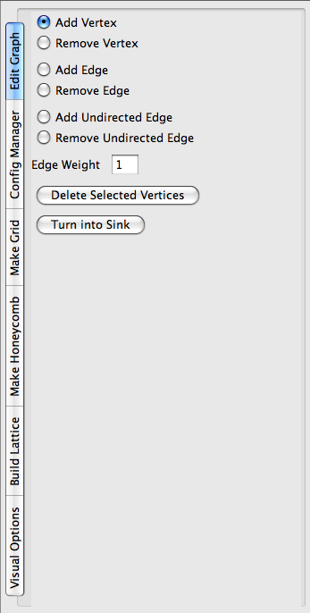
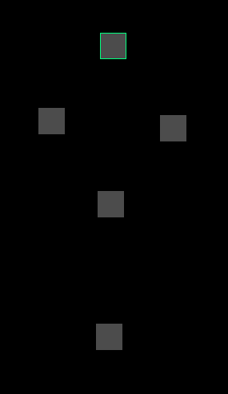
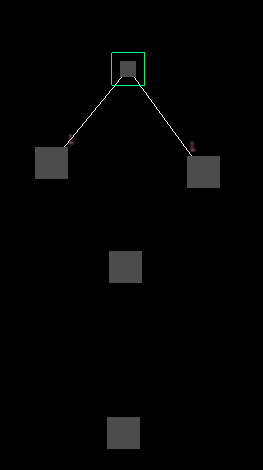
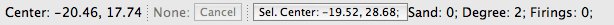
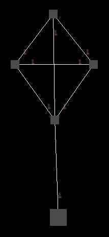
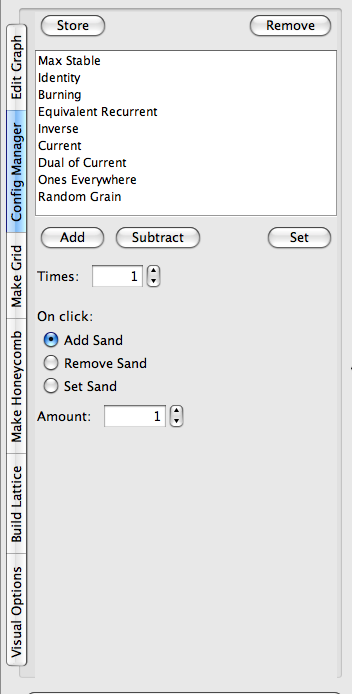
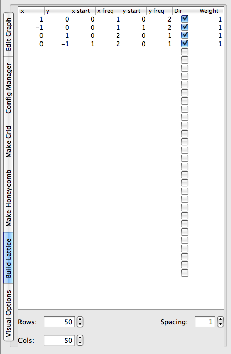

Sandpiles
About
This document describes how to use the Sandpiles program. It is most definitely a work in progress.
Currently, it walks through the different interface panels, explaining how to use each feature.
Comments, questions, feature requests, and bug reports should be sent to bryan.head@gmail.com.
More information about sandpiles work can be found here.
Running
The program itself can be found in dist-[your system]. Once, there, you can either double click on SandpilesApp.jar (on most systems), or run "java -jar SandpilesApp.jar" from the command line.
Note:
On some linux systems, you may have to add "." to your LD_LIBRARY_PATH. To do this, from the terminal, run:
$ LD_LIBRARY_PATH = .:$LD_LIBRARY_PATH
$ export LD_LIBRARY_PATH
Basic Graph and Configuration Editing
When you first open the Sandpiles program, you will notice a big black block (called the canvas), a side panel, and toolbars at the top and bottom of the screen.
We will begin with a simple example to explain basic editing features.
On the sidebar, "edit graph" should be selected and the graph editing tools displayed. They look like this:

With "add vertex" selected, click on the canvas and gray block will appear. If it doesn't, make sure you are just clicking and not dragging the mouse at all. This is a vertex of a graph on which you will be running your sandpile simulation.
To get a closer look, you can zoom in using either the mouse wheel or the zoom controls at the top toolbar. Clicking and dragging moves around the canvas.
Create four more vertices in a kite shape so that you end with something that looks like:

If you make a mistake, ctrl-z/ctrl-y (or cmd-z/cmd-y on a Mac) will undo/redo. This can also be accessed in the "Edit" menu. If you want to start over, press "Del. Graph".
Now, this graph won't do a lot in its current state since none of the vertices are connected.
So we need to create some edges. First, select "Add Edge" on the side panel.
Next, hold down shift, click on the vertex at the top, then let go of shift. This selects the vertex.
Alternatively, you can click on "Select" at the top right and then click on the vertex, but you will have to click on "Edit" afterwards to create the edges. Holding down shift is equivalent to being in "Select" mode.
This should look like:

Now, with "Add Edge" selected, click on the rightmost and leftmost vertices.
You will see white lines appear between your selected vertex and those two vertices.
These are the edges. In fact, these edges are directed and weighted, but you can't currently
see what direction they are pointing or their weight is.
To remedy this, go the "Visual Options" tab and check "Draw Edge Labels".
Little "1"s should appear next to the white lines, closer to the bottom vertices, like so:

They are off by default because on larger graphs, they can really slow things down.
Notice that the vertex changed size when you created the edges.
The size of the vertex is dependent on the amount of sand on it divided by its outgoing degree.
This vertex now has degree 2 and 0 grains of sand on it, so it is quite small.
You can turn this feature off in the "Visual Options" tab.
Also, notice the bottom toolbar:

It contains some useful pieces of information.
- "Center" shows the current coordinates of the center of the canvas.
- The grayed out "None: Cancel" allows you to cancel operations that may take a long time.
- "Sel. Center" shows the coordinates of the center of the selected vertices (vertex in this case). Clicking on it will center the canvas at that point.
- Sand is total amount of sand on the selected vertices.
- Degree is total outgoing degree of the selected vertices.
- Firings is total number of times the selected vertices have fired (you can reset this counter using "Reset Firings Count").
Now, we should add some more edges. To unselect the top vertex, hold down shift (or go into "Select" mode) and click on a blank piece of canvas.
Still holding down shift, click and drag. A green selection box will be drawn. Use this to select the left and right vertices. Let go of shift (or go back to "Edit" mode). With "Add Edge" still selected, click on the second lowest vertex. Notice that an edge is drawn from both selected vertices to the target vertex.
Hold down shift again and click on one of the selected vertices. Clicking on a vertex with shift down both selects and unselects vertices. Switch to "Add Undirected Edge" in the side panel. Click on the vertex you just unselected (without holding down shift). An edge appears with "1"s on either side, indicating that the weight of the edge is 1 in both directions.
Finally, unselect the vertex and select the second lowest one. Create a directed edge from it to the topmost vertex and another one to the bottom most vertex. The result should look like:

Go to the "Config Manager" tab. It looks like this:

A configuration is a distribution of sand on the vertices of a graph.
The list in the config manager contains all stored configurations. At first, it contains only a set of calculated configurations, but if you've found a configuration you would like to keep track of, you can click "Store" to add it to the list.
"Add" and "Subtract" will, respectively, add and substract the selected configuration from the current configuration. "Set" will set the current configuration to the selected one. The "Times" counter will multiply the selected configuration by the number for whatever operation you've chosen. So, to add 1000 grains of sand to the configuration, you would select "Random Grain", set
"Times" to 1000, and press "Add".
To add, remove, or set sand for specific vertices, you select the operation you want under "On click:" and click on the vertex. Go ahead and try it. Notice that the colors change in correspondence to the number of grains you add. By default, the number of grains is not written on the vertices. You can change this in the visual options. You can also see the number of grains by selecting the vertex. You can change the colors in Edit->Preferences. The preferences dialogue is very much a work in progress at this point, though color changing is fully functional and it will remember your preferences between sessions.
Try adding an amount of sand equal to or greater than the degree of a vertex (for any but the bottom vertex). Press "Run". The colors change as the vertices fire. After a couple of steps, the sandpile will stabilize and stop moving. To change the speed at which the simulation runs, change the "Delay" field above (either by using the buttons or directly editing).
If you wish to save your work on a graph, you can use Ctrl-s (or Cmd-s for Mac). Saved Sandpile projects are just folders that contain a graph file (.sg) and any configurations that were stored.
Graph Generators
Hand editing graphs using the edit graph tab allows you to create any directed, weight graph, but it can be very slow going. To make bigger graphs, you can use the programs graph generators.
NOTE: Currently, very large graphs can take up a lot of memory, and may cause Java to run out. Anything less than 100,000 vertices should perform decently. 400,00 will still run, but editing the graph may result in problems. Larger graphs should be possible in the near future.
Also, to speed up the drawing of large graphs, it is highly recommended you turn off "Draw Edges" in visual options.
Make Grid
The make grid tab will create a standard grid graph, with each vertex having degree four. You can change the number of rows and columns of the graph, as well as the type of borders it has. To actually create the grid, simply click on the canvas. The point where you click will be the top left corner of the grid.
The border options include:
- Directed - Sink vertices will be created along the border. This is usually considered the standard sandpile graph.
- Undirected - Vertices will be created along the border, but they will be connected by undirected edges, making them reflectors.
- None - No special border edges or vertices will be generated. The vertices along the side will have degree 3 instead of 4.
- Loop to opposite - Directed edges will be created from the side to its opposite, so that vertices directly across from each other are connected.
- Loop to opposite reverse - Same as above, but, if the side is n vertices long, vertex i will connect to vertex n-i.
The last two may cause some confusion. For reference, some standard shapes they enable are:
- Ring - Set N and S to "loop to opposite". E and W can be directed, undirected, or none.
- Möbius strip - Set N and S to "loop to opposite reverse". E and W can be directed, undirected, or none.
- Torus - Set everything to "loop to opposite".
- Klein Bottle - Set N and S to "loop to opposite reverse", and E and W to "loop to opposite".
- Projective Space - Set everything to "loop to opposite reverse".
Make Honeycomb
The make honeycomb tab will create a graph in the shape of a regular hexagon, with each vertex having degree 6. The border options are the same as above.
Build Lattice
The build lattice tab allows you to create almost any lattice you wish. However, it also takes some getting used to. Also, it is still very much a work in progress. Currently, you cannot save lattice setups or control the borders, but that is coming. The lattice builder looks like:

I've expanded it slightly so you can read each column header in full. The basic idea is that you provide a list of integer vectors with certain parameters. The lattice builder will create a lattice of vertices, putting an edge between any two vertices that differ in position by one of the vectors. The different parameters are as follows (note that the bottom left of the lattice is considered (0,0)):
- x - The x value of the vector.
- y - The y value of the vector.
- x start - No vertex with an x-coordinate (relative to the lattice) lower than this will be affected by this vector.
- x freq - How frequently after x start to apply this vector. For instance, x start=0 and x freq=2 would apply the vector to all vertices with even x-coordinates. If the x freq is zero, the vector will be apply only to vertices with x coordinate equal to x start.
- y start and y freq - Same as x start and x freq, but with respect to the coordinate.
- Dir - Whether or not the resulting edges will be directed. If checked, the edges will point in the direction of the vector.
- Weight - The weight of the resulting edges.
The default lattice is called a Manhattan Lattice; it is made up of one way streets switching direction every other row/column.
The canvas is the giant black block that takes up most of the Sandpiles window.
You create and look at graphs and configurations with the canvas.
To scroll around the canvas, simply left click with your mouse (or just click on a Mac) and drag around. To zoom in and out, you can either use your mouse wheel or the zoom controllers in the top toolbar.
Note that navigating the canvas with the mouse will only work if "edit" is highlighted in the top toolbar.
Coloring
In visual options, you can change what the color (and label) of the vertex is based on.
- Number of Grains - Color depends on the amount of sand.
- Stability - Color depends on whether or not the vertex is stable.
- Total firings - Color depends on how many times the vertex has fired. To reset the counters, click on "Reset Firings Count".
- Difference from Base - Color depends on the amount of sand relative to another configuration. To set the base configuration to the current configuration, click on "Set Base Config".
You can change the colors used by going into Edit->Preferences. Clicking "insert" while no item is selected will append a new item to the end. The preferences dialogue is very much a work in progress.
3d Mode
To display graphs in 3d, the programs draws triangles between the vertices, varying the height of each vertex based on the number of grains on it. Thus, it created a surface in 3 dimensions. It does not currently display edges. You can adjust how the heights and colors are calculated by using "Height Smoothing", "Color Smoothing", and "Height Scalar". You can toggle the surface and a wireframe of the surface on and off using "Draw Shape" and "Draw Wire".
Last modified: Mon Aug 17 15:01:56 PDT 2009